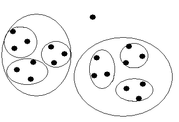

Il est certain qu'au début les nombres étaient représentés matériellement par :
De petits cailloux (calculi en latin)
Des encoches sur un bâton.
Des noeuds sur une ficelle.
L'idée de faire des groupements est venue très vite ainsi un caillou de couleur blanche pouvait représenter 5 ou 10 ou 20 unités et un caillou de couleur noire une unité, de la même façon une encoche de plus grosse taille ou inclinée différemment pouvait correspondre à un certain nombre d'unités, un noeud de plus grosse taille de la même façon pouvait représenter un groupement d'unités.
Les nombres suivants ont souvent servi de 'base' pour les regroupements:
5 pour les doigts d'une main
10 pour les 2 mains
20 pieds et mains
12 C'est une base très commode et nous verrons pourquoi
60 Même raison que précédemment.
Quand les nombres apparaissent dans l'écriture ils apparaissent d'abord sous forme de bâtons, les regroupements peuvent être faits avec d'autres symboles, ou bien les mêmes disposés différemment.
Les grecs et les romains disposant d'un alphabet utilisent les lettres de cet alphabet pour écrire les nombres.
I pour l'unité (le bâton)
V pour 5 (forme de la main)
X pour la dizaine (deux mains superposées)
L pour cinquante
C pour cent
D pour cinq cent
M pour mille.
Un nombre est donc une succession de symboles de poids décroissants (en principe) MCCXXI = 1221 Avec quelques astuces pour des économies d'écriture, si un symbole de poids plus fort précède un symbole de poids moins fort c'est qu'il faut faire une soustraction: Ainsi on écrit IX au lieu de VIIII et XC au lieu de LXXXX
Les chiffres romains sont suffisants pour exprimer des quantités modestes, mais se prêtent mal au calcul, il faut être expert pour faire des multiplications à moins d'utiliser un appareil spécialisé (boulier).
La révolution vient de l'Inde avec la numération dite 'de position' rendue possible par l'invention du chiffre 0 (initialement noté par un simple point). L'idée est d'exprimer tous les nombres naturels (qui sont en nombre infini) au moyen d'un nombre fini de symboles (appelés des chiffres), en choisissant une base unique (usuellement 10 à cause de la morphologie humaine) et en utilisant la à répétition.
Supposons que nous disposions uniquement de 3 symboles:
α pour désigner le naturel 0
β pour désigner le naturel 1
γ pour désigner le naturel 2
Et qu'avec ces 3 symboles nous voulions écrire le nombre 19.
Nous commençons par diviser 19 par 3 (faire des paquets de 3). On en trouve 6 et il reste une unité donc β sera le chiffre de poids faible situé le plus à droite. On fait la même chose avec les paquets de 3 (groupement par 3, on en trouve 2 et il ne reste rien donc α sera le chiffre des 3 immédiatement à gauche du précédent. L'opération s'arrête car on ne peut plus faire de groupement de 3. On écrit donc le chiffre des paquets de 9 soit γ .
Basic concept of numeral system
It is certain that at the beginning the numbers were represented materially by:
Small pebbles (calculi in Latin)
Notches on a stick.
Knots on a string.
The idea of making groups came very quickly, so a pebble of white color could represent 5 or 10 or 20 units and a pebble in black color one unit, in the same way a bigger notch differently sized or slanted could correspond to a certain number of units, a larger node in the same way could represent a grouping of units.
The following numbers have often served as the 'base' for groupings:
5 for the fingers of one hand
10 for both hands
20 feet and hands
12 It's a very convenient base and we'll see why
60 Same reason as above.
When numbers appear in writing they appear first in the form of sticks, groupings can be made with other symbols, or the same ones arranged differently.
The Greeks and Romans with an alphabet use the letters of this alphabet to write the numbers.
I for the unit (the stick)
V for 5 (hand shape)
X for the ten (two hands superimposed)
L for fifty
C percent
D for five hundred
M per thousand.
A number is therefore a succession of symbols of decreasing weight (in principle) MCCXXI = 1221 With some tips for writing savings, if a symbol of higher weight precedes a lower weight symbol it is necessary do a subtraction: Thus we write IX instead of VIIII and XC instead of LXXXX
Roman numerals are sufficient to express modest quantities , but are not well suited to calculation, it is necessary to be an expert to make multiplications with such a sytem unless you use a specialized device (abacus).
The revolution comes from India with the so-called 'position' numeration made possible by the invention of the number 0 (initially denoted by a single dot). The idea is to express all the natural numbers (which are in infinite number) by means of a finite number of symbols (called digits), by choosing a single base (usually 10 because of the human morphology) and using the with repetition.
Suppose we only have 3 symbols:
α to designate the natural 0
β to designate the natural 1
γ to designate natural 2
And that with these 3 symbols we want to write the number 19.
We start by dividing 19 by 3 (making bundles of 3). We finds 6 and one unit remains so β will be the digit of lower weight located farthest to the right. We do the same with packages. of 3 (grouping by 3, we find 2 and there is nothing left so α will be the digit of the 3 immediately to the left of the previous one. The operation stops because we can no longer make a group of 3. We therefore writes the digit of the packets of 9 that is γ .

Donc, avec un système ternaire comportant les seuls chiffres α , β , γ le nombre 19 s'écrit: γαβ
En résumé quand un nombre m est écrit Cn Cn-1 ......C1 C0 en base b où les Ci 0 ≤ Ci < b sont les chiffres de m dans la base b, le nombre m vaut C0 +bC1+b2C2 +...+bnCn . Inversement pour avoir l'écriture de m en base b, on procède ainsi: On effectue la division euclidienne de m par b m=bq0 +r0 r0 sera C0 . Puis on divise q0 par b q0 =bq1+r1 r1 sera C1 . et ainsi de suite jusqu'à ce qu'on trouve un quotient qn < b qui sera le chiffre Cn de poids fort de m
La base la plus utilisée est évidemment la base 10, ce n'est pas la meilleure possible. De fait la base 12 serait idéale parce que les critères de divisibilité par 2, 3, 4 et 6 sont évidents. En base 10 seuls les critères de divisibilité par 2 et 5 (les diviseurs de la base) sont évidents.
Vous pouvez maintenant générer quelques exemples:
So, with a ternary system having only digits α, β , γ the number 19 is written: γαβ
In summary when a number m is written Cn Cn-1 ......C1 C0 in base b where the Ci 0 ≤ Ci< b are the digits of m in base b, the number m is equal to C0 +bC1+b2C2+...+bnCn . Conversely, to write m in base b, we proceed as follows: We perform the Euclidean division of m by b m=bq0 +r0 r0 will be C0 . Then we divide q0 by b q0 =bq1+r1, r1 will be C1 . and so on until we find a quotient qn < b which will be the number Cn most significant of m
The most used base is obviously the base 10, it is not the best possible. In fact the base 12 would be ideal because the divisibility criteria by 2, 3, 4 and 6 are obvious. In base 10 only the criteria for divisibility by 2 and 5 (the base divisors) are obvious.
You can now generate some examples:
Le coin de Python
Ce programme convertit un nombre en une base b < 10.
Le coin de Julia
Utilisation de Julia 1.6 pour des conversions au moyen de fonctions prédéfinies.
Python's corner
This program converts into base b < 10.
Julia's corner
Using Julia 1.6 for conversions using built-in functions.